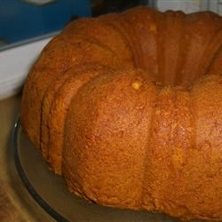

Pumpkin Spice Cake

Description
This pumpkin spice cake recipe is sure to be a hit with anyone who loves spice cakes.
Even if your family doesn't like pumpkin, I promise they'll never know there's pumpkin in this delicious cake! Studded with nutty pecans,
this moist spice cake would be delicious topped with a cream cheese frosting or maple glaze. I even used this recipe for cupcakes at Thanksgiving
so everyone could get a little more cream cheese frosting.
Ingredients
- Flour
- Spices and Seasoning
- Baking Soda
- Shortening
- Sugar
- Eggs
- Pumpkin
- Pecans
Steps
- Mix the dry ingredients: Sift the flour, cinnamon, baking soda, salt, nutmeg, ginger, and allspice together in a bowl.
- Mix the wet ingredients: In a separate bowl, cream the shortening, both sugars, and eggs until the mixture is light and fluffy.
Stir in the pumpkin puree. Gradually add the flour mixture until combined, then stir in the pecans.
- Bake the cake: Pour the batter into a greased and floured Bundt pan. Bake in the preheated oven until a toothpick comes out clean.
- Cool the cake: Remove the cake from the oven and let it cool in the pan for at least 10 minutes. Turn it out onto a wire rack to finish cooling.
Next
Return to main page